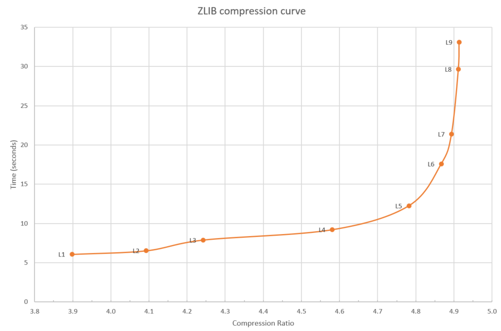
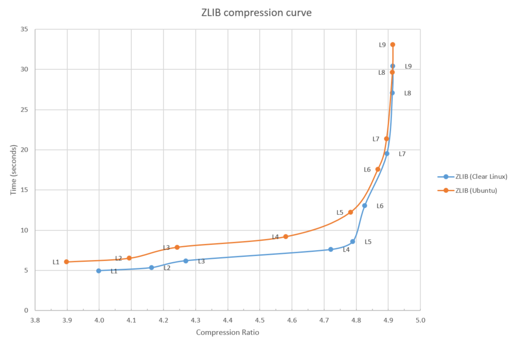
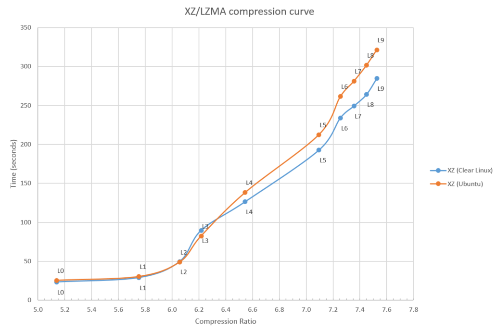
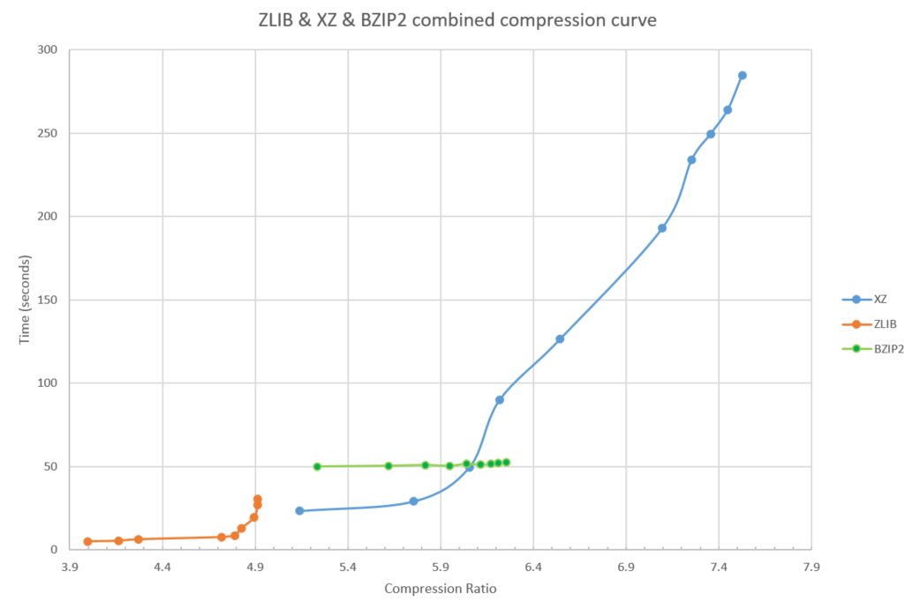
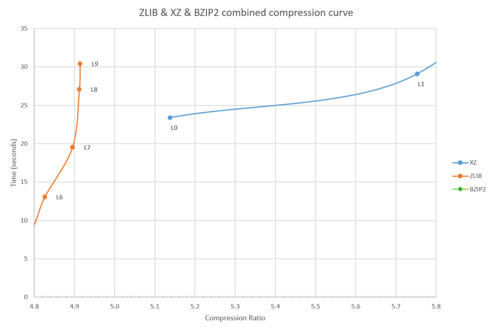
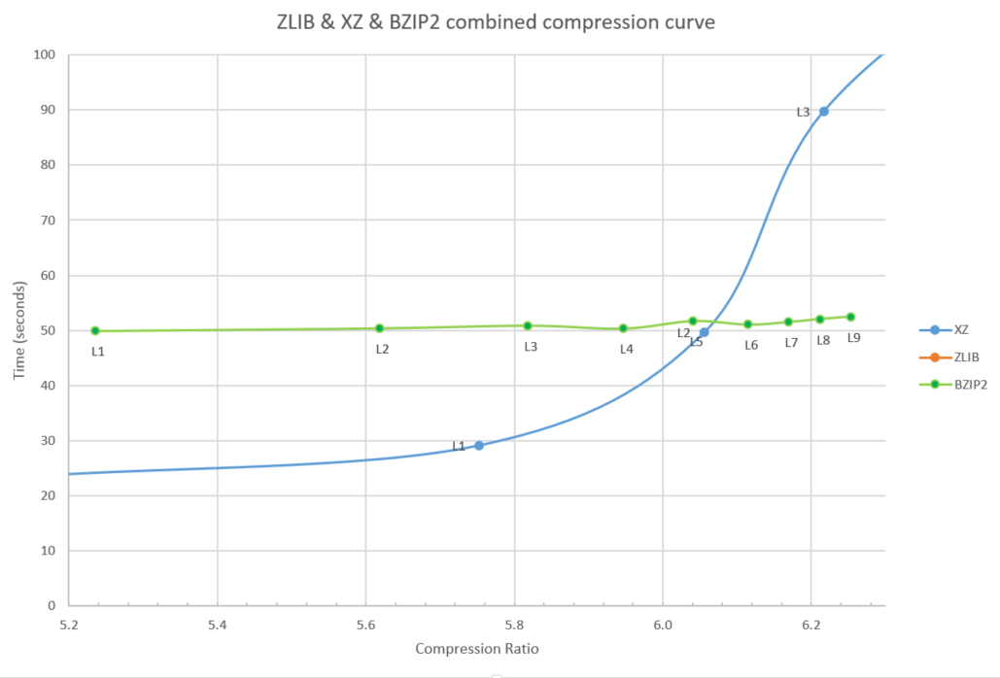
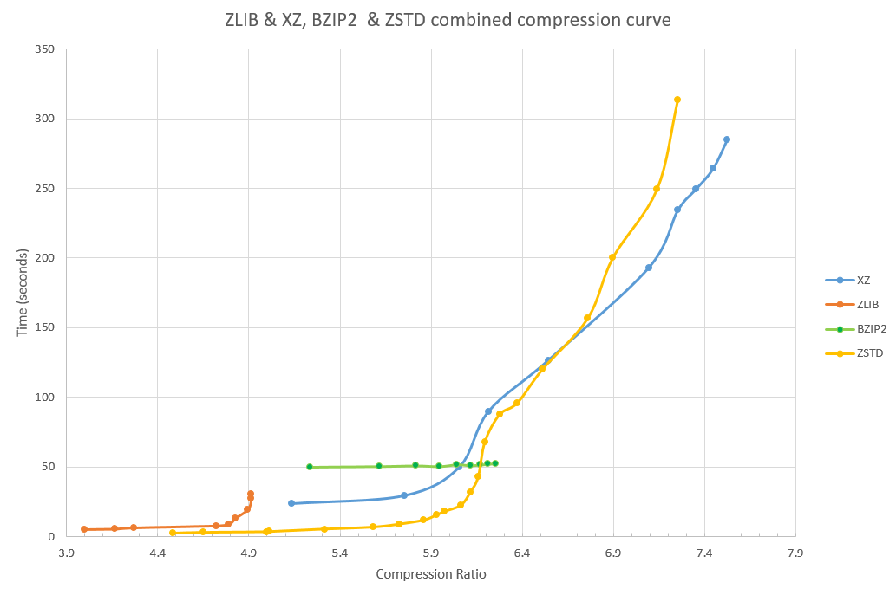

Linux OS data compression options: Comparing behavior
03 Jan, 2017
A typical Linux* OS offers many options for reducing the storage space of data. The typical list of compression options includes things like zlib, xz, bzip2 as well as lz4 and Snappy. Several of these compression algorithms provide a tunable, called "level", a number from 0 to 9 that changes the behavior of the algorithm. The result are many choices and this blog post tries to show the differences between these choices.
About data compression
First, let us have a quick word about data compression algorithms. Data compression falls in the realm of the information theory field of science and has been thoroughly studied since Claude Shannon started research in this area in 1948. I am going to spare you the hard sciency bits for the rest of the article but a quick high-level overview will be useful.
Data compression algorithms take advantage of the redundancy in the files they are compressing to reduce the size of the files and thus the storage/transmission requirements. Generally, compression algorithms work in two steps:
-
The algorithm uses information from earlier in the file to find repeating patterns.
-
The pattern is turned into an efficient stream of bits and bytes - the so called entropy coding - on the disk.
Various scientists have proven that an optimal compression algorithm exists. For example, the Context Tree Weighting was the first algorithm proven to be optimal for very large data streams with a fixed sized startup overhead. I've had the pleasure to be in a classroom watching professor Ziv prove the LZ77 algorithm is likewise theoretically optimal. The LZ77 family of algorithms form the basis of most data compression implementations used in this blog post.
If multiple algorithms are proven to be theoretically optimal, why does this blog post exist? The catch is: this optimality only happens for very large data sets and, generally, without regard for the computation time and memory consumption this optimal algorithm would take to implement. The key is the first step as described before: finding the repeating patterns. The various implementations I will compare in this blog post differ primarily in how far back they search and how efficient their search algorithms are.
Starting with zlib
No blog post about data compression implementations can exist without talking about the zlib algorithm, called Deflate, and its implementation. The zlib algorithm and file format are standardized in internet standards (RFC 1950, 1951 and 1952) and have been extremely widely used since 1995. Partly, because they avoided many legal pitfalls which hit other algorithms in the litigious era of the 1990s.
zlib provides 9 levels of compression and a "level 0" which just does a 1:1 uncompressed store of the data. The amount of compute time spent on searching for repeating patterns varies from level to level. The format on the disk for all levels is the same shielding a decompressor from the level differences.
To show the differences between these levels, I have measured both the compression ratio, how much smaller did the data get, and the time it took to compress the reference file I used. The results are plotted on figure 1. The reference file I used is the source code tar file of the Linux 4.9 kernel which is 664 megabytes in size.

Figure 1: zlib compression curve
As you can see in figure 1, as the compression level goes up, so does the time to compress, and, at the higher levels (7-9), the time goes up a lot for a modest gain in extra compression. Utilities like "gzip" generally use level 6 as default level, avoiding the steep end of the curve.
Now, regarding the performance of zlib, details matter and various Linux distributions end up having different performances and, specifically, the Clear Linux* OS distribution (a project I work on) ships with an optimized implementation of zlib. Figure 2 shows this difference.

Figure 2: zlib compression curve
More information about these optimizations to zlib can be found in the whitepaper that Intel published about these optimizations.
Adding XZ (LZMA*)
As much as zlib is the default standard algorithm, you likely have seen a lot of files with the xz extension. The xz implementation is based on the earlier lzma implementation and in many ways modernizes the zlib algorithm. Where the zlib algorithm and file format are limited to a history or "window" of 32 kilobytes, showing its 1995 age, the xz implementation uses a much larger history size. This means the algorithm is going to find more repeating patterns than zlib does and can gain a higher compression ratio than zlib. At the same time, this ability to look further back also consumes more CPU cycles and memory. The xz implementation has 10 levels (0 - 9) of compression and the compression ratio vs. time tradeoff for the levels is shown in figure 3.

Figure 3: XZ/LZMA compression curve
Figure 3 shows both the Clear Linux* OS and Ubuntu (16.10) implementation to highlight how compiler versions and compiler options (O2 vs. O3) can make a real difference in performance.
Just as with zlib, higher compression ratios come at a higher CPU time cost and the 7.5x compression ratio (L9) takes more than 10x longer to compute than the 5.1x compression ratio (L0).
One thing to note is how the low end (L0) of the xz implementation starts at a compression ratio of 5.2, whereas zlib's best ratio was 4.9. In other words, the longer history and improved search algorithms of xz result in a better compression ratio compared to zlib across the board.
Adding bzip2 and putting it all together
In the past, the bzip2 algorithm was popular but bzip2 is now mostly replaced by the xz implementation. To show why and how zlib, xz, and bzip2 compare, I've put all three measurements in figure 4.

Figure 4: zlib, XZ, and BZIP2 combined compression curve
Note a few things about figure 4:
The high zlib compression levels (8 and 9) are both slower and achieve lower compression than the lowest xz compression levels, see figure 5 for a closeup. Unless you care about the compatibility of the file format, it makes no sense to pick these high zlib levels. you can pick level 0 or 1 of xz instead and get better compression at less cpu time.

Figure 5: High level zlib vs. low level xz
Secondly, the bzip2 algorithm is always slower than the xz algorithm, except for an area around xz level 3 and bzip levels 6 to 9, see figure 6. xz just about always being better explains why use of bzip2 has gone out of favor for general purpose compression. Bzip2 is still used in some special places because there are some common types of data, not the Linux kernel source code, such as large sparse matrices, where bzip2 ends up doing surprisingly well.

Figure 6: BZIP2 vs. XZ
The other end of the spectrum
For some usages, for example, the live streaming of data over the internet, limiting compute time is more important than compression ratio, and I've compared two common algorithms designed for this sweet spot: LZ4 and Snappy.
Figure 7: zlib, Snappy, and LZ4 combined compression curve
As you can see in figure 7, LZ4 and Snappy are similar in compression ratio on the chosen data file at approximately 3x compression as well as being similar in performance. Compared to zlib level 1, both algorithms are roughly 4x faster while sacrificing compression down from a 4x ratio to a 3x compression ratio.
Summary
zlib is a reasonable "middle of the road" algorithm or implementation that reaches reasonable compression at reasonable CPU utilization, with the ubiquitousness and internet standardization as added benefits. When needing maximum compression ratios, xz is the clear choice at the expense of longer compression times, while both LZ4 and snappy provide interesting design points at the high performance and throughput end of the spectrum. The bzip2 algorithm is likely only interesting in more niche usages where the data is known to have bzip2-friendly patterns.
Update 1
I have gotten several requests to include "zstd" in the graphs; this is done below. Zstd clearly outperforms zlib across the board, and outperfoms the lower levels of XZ as well, although at the higher ratio end of the range, XZ is faster and can compress a bit more.

Links
https://en.wikipedia.org/wiki/Claude_Shannon
https://en.wikipedia.org/wiki/Context_tree_weighting
Versions
Unless otherwise stated, the comparisons were done on the Clear Linux* OS, version 12420.
This means zlib version 1.2.8-jtk4, xz version 5.2.3, bzip version 1.0.6, snappy version 1.1.3 and lz4 version 1.7.4.2.
Disclaimers
The data in this blog post is not intended to compare, sell or claim performance of any piece of hardware, and is provided for ease of relative comparison between different software algorithms.
Tests document performance of components on a particular test, in specific systems. Differences in hardware, software, or configuration will affect actual performance. Consult other sources of information to evaluate performance as you consider your purchase.
*Other names and brands may be claimed as the property of others.